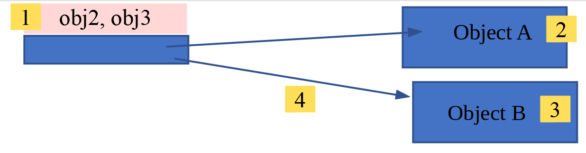

5. As classes
Vocabulário: uma classe (palavra-chave [class]) é um tipo do PHP. Uma variável desse tipo é chamada de objeto. Um objeto é uma instância de uma classe.
É neste capítulo que a evolução do PHP entre as versões 7 e 8 é mais evidente. O PHP 8 introduziu uma série de recursos que tornam a escrita de classes mais concisa e mais segura: atributos tipados, promoção de parâmetros do construtor, atributos somente leitura ([readonly]), enumerações ([enum]), property hooks e visibilidade assimétrica (PHP 8.4), clonagem com modificação (PHP 8.5)... Apresentamos esses conceitos por meio de exemplos, seguindo a progressão do curso de PHP 7: começamos pela classe mais básica e avançamos até uma classe escrita segundo as boas práticas atuais.
5.1. A estrutura de diretórios dos scripts
Os scripts deste capítulo estão na pasta [scripts-console/classes]:
Como nos capítulos anteriores, um script de console é executado em um terminal do [VS Code] aberto na pasta do script, com o comando [php script-name.php].
5.2. Qualquer variável pode se tornar um objeto com atributos?
No PHP 7, era possível escrever [$obj1->attr1 = "one";] em uma variável inexistente [$obj1]: o PHP então criava silenciosamente (com um simples aviso) um objeto do tipo [stdClass] com o atributo [attr1]. Isso não é mais possível no PHP 8. O script [classes-01.php] é o seguinte:
Resultados:
Comentários
- Linhas 7 a 9: no PHP 8, a variável [$obj0] não existe, e a operação [$obj0->attr1 = "one"] lança um erro do tipo [\Error] (linha 2 dos resultados) em vez de criar um objeto. Examinaremos a estrutura [try / catch] no capítulo sobre exceções. Por enquanto, basta saber que ela permite capturar o erro e continuar a execução do script;
- linha 13: um objeto genérico deve ser criado explicitamente com o operador [new]. A classe predefinida [stdClass] é uma classe vazia;
- Linhas 15 e 16: a notação [$obj->attr] designa o atributo [attr] do objeto [$obj]. Se ele não existir, é criado; isso é chamado de atributo dinâmico. A classe [stdClass] foi concebida para esse fim: é possível adicionar a ela quantos atributos se quiser;
- Linha 25: a expressão [$obj2 = $obj1], quando [$obj1] é um objeto, é uma cópia de referências: [$obj2] e [$obj1] são referências (endereços) para o mesmo objeto. O próprio objeto pode ser modificado por qualquer uma das referências;
- Linhas 27 a 30: têm o objetivo de mostrar que [$obj1] e [$obj2] são duas variáveis diferentes que apontam para o mesmo objeto. [$obj2 = $obj1] copiou o valor de [$obj1] para a variável [$obj2] (operação 1 abaixo). O valor de [$obj1] é o endereço de um objeto. Assim, [$obj1] e [$obj2] apontam para o mesmo objeto. Quando se manipula uma variável [$obj] que aponta para um objeto, o PHP manipula o objeto apontado. Como mostra o diagrama abaixo, podemos modificar o objeto referenciado tanto por meio de [$obj1] quanto por meio de [$obj2]. Isso é ilustrado nas linhas 5 e 6 dos resultados;

- linha 39: a expressão [$obj3 = &$obj2] faz com que [$obj2] e [$obj3] fiquem no mesmo endereço [1 below]. Pode-se dizer que as duas variáveis são aliases da mesma posição de memória. Ambas apontam para um objeto, o Objeto A abaixo: [2];
- Linha 50: a operação [$obj2 = new \stdClass()] cria um novo objeto, o Objeto B [3 below], e o endereço desse novo objeto é atribuído à variável [$obj2] [4]. Como [$obj2] e [$obj3] são dois aliases da mesma posição de memória, [$obj3] também aponta para o novo Objeto B. Isso é mostrado nas linhas 31 a 42 dos resultados;

- Linha 61: um objeto é um dicionário? No PHP 7, a função [count] aceitava um objeto (com um aviso) e retornava 1, o que não fazia sentido. No PHP 8, ela lança um erro [TypeError]: [count] aceita apenas arrays ou objetos que implementam a interface [Countable] (linha 43 dos resultados);
- linha 66: a função [get_object_vars] retorna os atributos de um objeto como um array associativo. O número de elementos do array é igual ao número de atributos do objeto;
- Linhas 68 e 69: um objeto pode ser percorrido com [foreach], assim como um dicionário. As chaves são os nomes dos atributos, e os valores são os valores desses mesmos atributos. Assim, um objeto tem semelhanças com um dicionário, mas não é um. No PHP 7, essa iteração era feita com a função [each], que desde então foi removida;
- linhas 72 a 74: o operador de conversão [(object)] converte um array associativo em um objeto [stdClass], e o operador [(array)] faz a operação inversa.
5.3. Uma classe Person sem atributos declarados
No PHP 7, uma classe podia usar atributos que não havia declarado: bastava escrever [$p->firstName = "Paul";] para criar o atributo [firstName] no objeto [$p], como se faz com [stdClass]. Esses atributos dinâmicos em objetos de uma classe comum são obsoletos desde o PHP 8.2: cada vez que um atributo desse tipo é criado, a mensagem “Deprecated: Creation of dynamic property Person::$firstName is deprecated” é exibida. Eles serão removidos em uma versão futura do PHP. O motivo é simples: um erro de digitação no nome de um atributo ([$p->firstNam = "Paul"]) criaria silenciosamente um novo atributo em vez de relatar o erro.
Há três exceções a essa regra:
- a classe [stdClass], que acabamos de usar, ainda aceita atributos dinâmicos;
- uma classe precedida pelo atributo [#[\AllowDynamicProperties]] também os aceita. Esse atributo foi concebido para facilitar a migração de código legado. Não o usaremos neste curso;
- uma classe que define os métodos mágicos [__get] e [__set] decide por conta própria o que fazer com um atributo não declarado.
É essa terceira solução que o script [classes-02.php] apresenta:
Resultados:
Comentários
- Linhas 6 a 38: definem uma classe chamada [Person]. Uma classe é um modelo usado para criar objetos. Ela é composta de atributos e de funções chamadas métodos;
- linha 10: o único atributo declarado para a classe é um array privado (veremos em breve o significado da palavra-chave [private]). Esse array armazenará os atributos “não declarados”;
- linhas 13 a 16: o método mágico [__set] é chamado automaticamente pelo PHP ao escrever em um atributo que não existe (ou que não é acessível). Ele recebe o nome do atributo e o valor a ser atribuído a ele. Aqui, ele armazena esse valor no array [$attributes]. Os métodos cujos nomes começam com dois sublinhados são chamados de métodos mágicos: eles não são chamados explicitamente; é o PHP que os chama;
- linhas 19 a 22: o método mágico [__get] é chamado ao ler um atributo que não existe. Ele retorna o valor armazenado ou [null]. O operador [??] retorna seu operando à esquerda se ele existir e não for [null]; caso contrário, retorna seu operando à direita;
- linha 25: o método mágico [__isset] é chamado pela função [isset];
- Linha 31: o método [identity] usa três atributos que não são declarados na classe. A palavra-chave [$this] designa o objeto ao qual o método é aplicado. Cada chamada a [$this->firstName] dispara uma chamada a [__get];
- Linha 40: um objeto [$p] do tipo [Person] é criado. A palavra-chave [new] é usada para criar um novo objeto. A operação retorna uma referência ao objeto criado (ou seja, um endereço). Várias notações são possíveis: [new Person()], [new Person], [new person]. O nome da classe não diferencia maiúsculas de minúsculas;
- linhas 41 a 43: os três atributos exigidos pelo método [identity] são criados no objeto [$p] pelo método [__set];
- linha 45: o método [identity] da classe [Person] é aplicado ao objeto [$p]. No código do método [identity], [$this] referencia o mesmo objeto que [$p].
Essa técnica tem seus usos (objetos de configuração, encapsulamento de dados lidos de um arquivo), mas não é a maneira padrão de escrever uma classe. Em uma classe comum, declaram-se seus atributos.
5.4. A classe Person com atributos declarados
O script [classes-03.php] é o seguinte:
Resultados:
Comentários
- Linhas 9 a 11: os atributos da classe são declarados explicitamente. A palavra-chave [public] significa que eles são acessíveis de fora da classe. No PHP 7, o curso usava a palavra-chave [var], herdada do PHP 4, que é sinônimo de [public] e não é mais usada hoje;
- Cada atributo é precedido por seu tipo: [string] para nome e sobrenome, [int] para a idade. São atributos tipados, introduzidos no PHP 7.4. Os tipos possíveis são os dos parâmetros de funções: [int], [float], [string], [bool], [array], o nome de uma classe ou interface, um tipo anulável [?string], um tipo união [int|float]...;
- linha 30: um atributo tipado aceita apenas valores do seu tipo. Qualquer outro valor causa um erro [TypeError] (linha 3 dos resultados);
- linhas 35 a 37: um atributo tipado sem valor padrão fica no estado “não inicializado” até que lhe seja atribuído um valor. Lê-lo causa um erro (linha 4 dos resultados). Já os atributos sem tipo têm o valor padrão [null]. Esse é um dos motivos para inicializar todos os atributos de um objeto assim que ele é criado: é o papel do construtor.
5.5. A classe Person com um construtor
Os exemplos anteriores mostraram classes exóticas, como as que existiam no PHP 4. Não é recomendável seguir esses exemplos. Apresentamos agora uma classe [Person] [classes-04.php] que segue as boas práticas padrão, encontradas em todas as linguagens orientadas a objetos (Java, C# etc.):
Resultados:
Comentários
- Linha 4: especificamos que os tipos declarados dos parâmetros das funções devem ser estritamente respeitados. Sem essa declaração, o PHP tentaria converter um valor do tipo errado (por exemplo, a string ["48"] em um inteiro [48]);
- Linhas 6 a 60: a classe [Person];
- Linhas 9 a 11: os atributos privados da classe ([private]). Esses atributos só são visíveis dentro da classe. Outras palavras-chave que podem ser usadas são:
- [public]: torna o atributo público, visível fora da classe;
- [protected]: torna o atributo protegido, visível dentro da classe e de suas classes derivadas;
- Como os atributos são privados, não podem ser acessados de fora da classe. Portanto, não podemos escrever [$p->lastName = "Landru"]: estamos fora da classe [Person], e o atributo [lastName] é privado. As linhas 72 a 74 verificam isso: tentar ler [$p->lastName] resulta em um erro (linha 5 dos resultados). Para inicializar os atributos privados do objeto [$p], há duas maneiras:
- usar os métodos públicos [set] e [get] (os nomes desses métodos podem ser quaisquer) nas linhas 14 a 39. Nesse caso, escrevemos: [$p->setLastName("Landru")];
- usar o construtor das linhas 45 a 50. Escreveríamos então: [$p = new Person("Michel", "Landru", 44)]. Essa sintaxe chama automaticamente o método da classe [Person] chamado [__construct];
- linha 64: essa linha exibe a pessoa [$p] como uma string. Para isso, é usado o método da classe [Person] chamado [__toString] (linha 54);
- linha 70: a partir do PHP 8.0, toda classe que define um método chamado [__toString] implementa automaticamente a interface predefinida [Stringable] (trataremos de interfaces no próximo capítulo). O operador [instanceof] verifica se um objeto é de um determinado tipo. Uma função pode, assim, declarar um parâmetro do tipo [string|Stringable]: ele então aceita uma string ou qualquer objeto que possa ser convertido em string;
- todos os métodos da classe foram prefixados com a palavra-chave [public], que indica que o método é visível fora da classe. As outras palavras-chave que podem ser usadas são, como nos atributos e com o mesmo significado, [private] e [protected]. Sem uma palavra-chave de visibilidade explícita, o método é implicitamente [public]. As diretrizes de estilo PSR-12, que os scripts deste curso seguem, exigem que a visibilidade seja sempre especificada explicitamente.
5.6. Promoção de parâmetros do construtor
A classe anterior é prolixa: cada atributo é nomeado quatro vezes (declaração, parâmetro do construtor, atribuição no construtor, getter). Desde o PHP 8.0, a promoção de parâmetros do construtor permite declarar e inicializar um atributo diretamente na lista de parâmetros do construtor. O script [classes-22.php] demonstra isso:
Resultados:
Comentários
- Linhas 10 a 14: cada parâmetro do construtor precedido por uma palavra-chave de visibilidade ([private], [protected], [public]) é “promovido”: o PHP declara um atributo com o mesmo nome e o mesmo tipo e atribui a ele o valor do parâmetro. Essas três linhas substituem as declarações e atribuições de atributos da classe anterior;
- linha 13: um parâmetro promovido pode ter um valor padrão. A vírgula após o último parâmetro é permitida desde o PHP 8.0; ela facilita a adição de um parâmetro posteriormente;
- linha 15: o corpo do construtor pode conter código (como validações). Aqui, não há nada a fazer;
- linha 52: os argumentos nomeados (PHP 8.0) permitem passar argumentos em qualquer ordem, referindo-se a eles pelo nome do parâmetro. Isso torna o código mais legível, sobretudo quando uma função tem muitos parâmetros;
- linha 55: o parâmetro [age] é omitido; ele assume seu valor padrão;
- linha 58: a função [var_dump] mostra que os atributos promovidos são verdadeiros atributos privados da classe (linhas 5 a 12 dos resultados).
5.7. A classe Person com verificações de validade no construtor
O construtor de uma classe é o lugar apropriado para verificar se os valores de inicialização do objeto estão corretos. No entanto, um objeto também pode ser inicializado por meio de seus métodos [set] ou equivalentes. Para evitar duplicar as mesmas verificações em dois lugares diferentes, elas podem ser colocadas nos métodos [set]. Se um valor de inicialização do objeto se revelar incorreto, uma exceção será lançada. Eis um exemplo.
Primeiro, mova a definição da classe [Person] para seu próprio arquivo, [Person.php]:
Comentários
- Linha 4: especifica que os tipos dos parâmetros das funções devem ser respeitados conforme declarados;
- Linha 7: define um namespace. O nome completo (ou qualificado) da classe [Person] é, portanto, [\Examples\Person]. Observe o caractere [\] no início do nome qualificado: isso resulta em um nome qualificado absoluto. Se esse caractere estiver ausente, o nome é um nome qualificado relativo (relativo ao namespace atual). Assim, se duas classes, A e B, pertencem ao mesmo namespace E, no código da classe A, a classe B pode ser acessada com a notação relativa B. Se a classe A faz parte do namespace E1 e a classe B faz parte do namespace E2, então, no código da classe A, a classe B pode ser acessada com a notação absoluta [\E2\B]. Definir uma classe dentro de um namespace não é obrigatório, mas é considerado uma boa prática: duas bibliotecas podem então definir, cada uma, uma classe chamada [Person] sem conflito;
- os namespaces costumam corresponder à estrutura de diretórios dos arquivos. Assim, a classe A do namespace E1 costuma ficar em um arquivo chamado [E1/A.php]. Essa é a convenção PSR-4 usada pela ferramenta [Composer] para carregar classes automaticamente, que usaremos nos capítulos seguintes. A extensão [PHP Intelephense] do [VS Code] não exige isso. Não confunda a árvore de arquivos com um namespace: o nome totalmente qualificado de uma classe usa um namespace e nada tem a ver com a árvore de arquivos do arquivo PHP que contém a classe. Aqui, a classe [\Examples\Person] está no arquivo [scripts-console/classes/Person.php];
- linhas 13 a 15: os três atributos privados da classe;
- linhas 33 a 41: inicialização do atributo [firstName] e verificação do valor de inicialização;
- linha 36: a função [trim($string)] remove os espaços no início e no fim de [$string]. Assim, [trim(" abcd ")] é a string ["abcd"], e [trim(" ")] é a string vazia.;
- linha 37: se o nome estiver vazio, uma exceção é lançada (linha 38); caso contrário, o nome é armazenado (linha 40). Para lançar uma exceção, a classe predefinida [Exception] é usada aqui. Aqui, somos obrigados a usar seu nome absoluto, [\Exception]. Se usarmos seu nome relativo, [Exception], essa classe será procurada no namespace atual, isto é, no namespace [Examples] da classe [Person]. Assim, o interpretador PHP procurará uma classe com o nome absoluto [\Examples\Exception], que não existe;
- linhas 63–69: o construtor usa os métodos [set] para inicializar os atributos: as validações são escritas uma única vez;
- Os métodos das linhas 72 e 79 são descritos no parágrafo seguinte.
A classe [Person] é usada pelo seguinte script, [classes-05.php]:
Resultados:
Comentários
- Linha 7: O script usará a classe [Person]. É preciso, portanto, informar ao interpretador PHP onde encontrar a definição dessa classe. Esse é o papel das instruções [include file] e [require file]. A diferença entre as duas instruções é a seguinte: se a instrução [include file] encontrar erros ao carregar [file], um erro de nível [E_WARNING] é emitido, mas a execução continua, ao passo que [require], na mesma situação, gera um erro fatal e interrompe a execução do script. Cada uma dessas duas instruções tem uma variante: [include_once] e [require_once]. Essas duas variantes permitem tratar os casos em que um mesmo arquivo é incluído várias vezes. Considere, por exemplo, um projeto composto por vários scripts PHP, alguns dos quais referenciam a classe [Person]. A execução desses scripts faria com que o arquivo [Person.php] fosse incluído várias vezes, resultando em um erro, pois uma classe não pode ser definida duas vezes. A solução é usar as variantes [_once], que garantem que o arquivo seja incluído apenas uma vez no script global do projeto;
- A constante [__DIR__] é uma constante do PHP que designa o nome completo da pasta que contém o script em que a constante [__DIR__] aparece. A linha 9 a exibe (linha 2 dos resultados). Na máquina do leitor, o resultado será algo como [C:\laragon\www\php8-oct-2026\scripts-console\classes/Person.php]. Em um caminho de arquivo, no Windows, é possível usar [/] ou [\] indistintamente. Usar [__DIR__] torna o script independente da pasta atual no momento da execução;
- Linha 12: O script [classes-05.php] não tem namespace. Quando o código usa o nome relativo [Person], ele é procurado no namespace raiz [\] e, portanto, não será encontrado. Há duas soluções para esse problema:
- usar o nome completo da classe [\Examples\Person];
- usar a instrução [use], que especifica que, no código a seguir, o nome [Person] se refere à classe [\Examples\Person]. Em uma instrução [use], o nome é sempre absoluto: o [\] inicial é desnecessário (essa é a notação recomendada). A instrução equivale a [use Examples\Person as Person;], que especifica que o alias [Person] se refere à classe [\Examples\Person];
- a instrução [use] informa ao interpretador que a classe [Person] é, na verdade, a classe [\Examples\Person]. Isso posto, onde o interpretador encontrará o código dessa classe? A instrução [require_once] informa isso. As duas instruções têm papéis muito diferentes: [use] trabalha com nomes, [require_once] carrega um arquivo;
- linha 16: um objeto [Person] é criado. O método [__construct] da classe [Person] será executado implicitamente aqui;
- linha 18: exibe a pessoa [$p]. Para ser exibido, o valor da variável [$p] deve ser convertido em string. Implicitamente, o método [Person::__toString] é então executado. Esse método deve, portanto, retornar uma string;
- vimos que o construtor da classe [Person] pode lançar uma exceção [\Exception]. Essa exceção deve, portanto, ser tratada. Consequentemente, a criação de uma pessoa deve sempre estar dentro de uma estrutura
***[try / catch], como mostrado nas linhas 20–34. Aqui, provocamos um erro intencionalmente, passando uma idade que não é um inteiro. Nesse caso específico, o erro é lançado pelo interpretador PHP e não pelo código da classe [Person]. Isso porque a assinatura do método [Person::__construct]* é [__construct(string $firstName, string $lastName, int $age)]. Portanto, o parâmetro [age] passado ao construtor deve ser do tipo inteiro. Se não for, o interpretador PHP lança um erro do tipo [TypeError]. Além disso, os métodos [set] da classe [Person]* lançam uma exceção do tipo [\Exception]. Como o construtor que os chama não tem uma estrutura [try / catch], a exceção é propagada um nível acima, para o código que chamou o construtor, isto é, o código do script [classes-05.php]. Por fim, o script [classes-05.php]* pode receber dois tipos de erros: [\Exception] ou [\TypeError]. Por essa razão, a estrutura [try] tem duas cláusulas [catch] para tratar separadamente os dois tipos de erros. Quando o desenvolvedor tem certeza de que determinados erros não podem ocorrer, ele não usa as cláusulas [catch]** correspondentes. Aqui, elas são usadas sistematicamente apenas para fins de demonstração; - Linha 22: É possível escrever [Exception] ou [\Exception]. A primeira versão usa o nome relativo da classe, relativo ao namespace do script. Como o script não tem namespace, seu namespace é a raiz dos namespaces: [\]. Portanto, escrever [Exception] aqui equivale a escrever [\Exception]. É preferível usar os nomes absolutos das classes predefinidas do PHP em um script que não tem namespace próprio. Assim, se você decidir atribuir um namespace a esse script, usar os nomes absolutos das classes continua válido, ao passo que, no outro caso, mudar o namespace causará erros com os nomes relativos das classes;
- Linha 23: Quando ocorre uma exceção, o método [Exception::getMessage] recupera a mensagem de erro da exceção. O mesmo vale para um erro do tipo [TypeError]. No método [Person::setFirstName], foi escrito [throw new \Exception("The first name must not be empty")]. Essa é a mensagem recuperada pelo método [getMessage] no exemplo 3 (linha 5 dos resultados);
- linha 4 dos resultados: a mensagem de erro de [TypeError]. A partir do PHP 8.0, ela identifica o parâmetro problemático por seu número e nome: “Argument #3 ($age) must be of type int, string given.” As mensagens de erro do PHP 8 são mais específicas que as do PHP 7.
5.8. Adicionando um método que atua como segundo construtor
Em PHP, não é possível ter vários construtores com parâmetros diferentes que permitiriam construir um objeto de várias maneiras. Por isso, podem-se usar métodos que atuam como construtores. A classe [Person] tem dois métodos desse tipo:
Comentários
- Linhas 72–76: O método [initWithPerson] permite atribuir ao objeto atual os valores dos atributos de outro objeto [Person]. Aqui, ele chama o construtor [__construct], mas isso não é obrigatório. Ele poderia inicializar sozinho os atributos da classe [Person]. Observe que um método da classe [Person] tem acesso aos atributos privados de todos os objetos [Person], e não apenas aos de [$this];
- linhas 79–83: O método [fromPerson] é outra maneira de fazer isso, mais comum hoje em dia. É um método estático (palavra-chave [static]): ele não se aplica a um objeto, mas à classe. Ele é chamado com a notação [Person::fromPerson($p)]. Ele cria um novo objeto com [new self(...)]: a palavra-chave [self] designa a classe em que o código está escrito, neste caso [Person]. O tipo de retorno [self] indica que o método retorna um objeto dessa classe. Esse método é chamado de construtor nomeado ou método de fábrica (factory method). Voltaremos aos métodos estáticos mais adiante.
A nova classe [Person] é usada pelo seguinte script, [classes-06.php]:
Resultados:
Comentários
- Linha 17, linha 26, linha 33: É comum que, depois de uma exceção, seja preciso interromper a execução de um script de console se o erro encontrado for irrecuperável. Esse não é o caso de um script web: não se interrompe a execução do script, mas exibe-se uma página de erro. Se você estiver dentro de uma função, a instrução [exit] não será usada; em vez dela, será usada [return]: a execução do script não é interrompida ([exit]), mas a função é encerrada ([return]) depois que um erro foi registrado;
- linha 39: chamada ao construtor nomeado;
- linha 42: o operador [===] aplicado a dois objetos resulta em verdadeiro se eles forem o mesmo objeto (mesmo endereço). [$p3] e [$p2] são dois objetos distintos (linha 5 dos resultados);
- linha 43: o operador [==], quando aplicado a dois objetos da mesma classe, resulta em verdadeiro se seus atributos tiverem os mesmos valores (linha 6 dos resultados). A função [var_export] retorna uma representação PHP de seu parâmetro, neste caso [true] ou [false].
5.9. Verificações de validade com property hooks (PHP 8.4)
A classe anterior, [Person], protege seus atributos tornando-os privados e exigindo que o código externo use os métodos [get] e [set] . O PHP 8.4 oferece outra solução: os property hooks. Um atributo público pode ser acompanhado de um hook [set] — o código executado a cada escrita do atributo — e de um hook [get] — o código executado a cada leitura do atributo. Isso preserva a simplicidade de escrever [$p->age = 49] e, ao mesmo tempo, mantém o controle sobre os valores. É o que demonstra o script [classes-23.php]:
Resultados:
Comentários
- linhas 9–17: O atributo público [firstName] é seguido de um bloco delimitado por chaves que contém seus hooks. Aqui, há apenas um hook, [set];
- linha 10: O hook [set] recebe o valor a ser atribuído ao atributo. Ele o normaliza com [trim], verifica-o e lança uma exceção se estiver incorreto;
- linha 15: Dentro de seus hooks, [$this->firstName] designa o local de memória do atributo: o valor é armazenado ali. Em todos os outros lugares, [$this->firstName] passa pelos hooks;
- linha 13: uma exceção do tipo [\InvalidArgumentException] é lançada; essa é uma classe predefinida derivada de [\Exception] e mais específica que ela, que sinaliza um argumento inválido. Trataremos das exceções predefinidas do PHP no capítulo sobre exceções;
- linha 31: quando o hook [set] não declara um parâmetro, o valor recebido fica disponível na variável implícita [$value], e seu tipo é o do atributo;
- Linhas 40–42: Um atributo que tem apenas um hook, [get], e nunca referencia seu próprio local de memória é um atributo virtual: ele é calculado a cada leitura e não ocupa espaço no objeto. A notação [get => expression] é uma abreviação de um hook [get] que resulta no valor da expressão;
- linhas 45–50: o construtor atribui os atributos; essas atribuições são feitas por meio dos hooks [set]. A validação é, portanto, realizada tanto durante a construção quanto em qualquer modificação posterior, sem usar os métodos [set];
- linha 54: o nome [" Paul "] é limpo pelo hook [set];
- linha 57: o atributo [age] é modificado diretamente, mas por meio de seu hook [set];
- Linhas 60–66: Tenta-se atribuir valores inválidos. A notação [$p->$attribute] usa o conteúdo da variável [$attribute] como nome do atributo. Os hooks [set] lançam suas exceções (linhas 4–5 dos resultados);
- linha 69: o atributo virtual [identity] não tem um hook [set]: ele é somente leitura (linha 6 dos resultados);
- linha 75: o objeto manteve valores válidos. [var_dump] mostra apenas três atributos: o atributo virtual [identity] não existe na memória.
Os property hooks existem há muito tempo em outras linguagens (C#, Kotlin, Swift). Eles eliminam a necessidade de escrever getters e setters “por precaução”: você começa com um atributo público simples e adiciona um hook quando a validação se torna necessária, sem alterar o código que usa a classe.
5.10. Visibilidade assimétrica (PHP 8.4)
Muitas vezes, uma propriedade precisa ser legível por todos, mas modificável apenas pela própria classe. No passado, escreveríamos uma propriedade privada e um getter público. O PHP 8.4 permite definir níveis de visibilidade diferentes para a leitura e a escrita de uma propriedade: isso se chama visibilidade assimétrica. O script [classes-24.php] demonstra isso usando uma conta bancária:
Resultados:
Comentários
- Linha 9: O atributo [balance] é público para leitura ([public]) e privado para escrita ([private(set)]). O código externo pode ler [$account->balance], mas apenas os métodos da classe podem modificá-lo. Também é possível escrever [protected(set)]: nesse caso, as classes derivadas podem modificar o atributo;
- linha 12: a visibilidade assimétrica também é possível para um parâmetro promovido;
- linhas 17–25: Os métodos [deposit] e [withdraw] são as únicas maneiras de modificar o saldo. Eles verificam a validade das operações;
- linha 39: os atributos são lidos diretamente, sem getters. A notação [{$expression}] dentro de uma string entre aspas permite inserir uma expressão mais complexa que uma simples variável;
- linha 42: Escrever no saldo de fora da classe causa um erro (linha 3 dos resultados). O caractere [_] pode ser usado como separador de milhares em um número literal (PHP 7.4);
- Linha 48: O saque é rejeitado pelo método [withdraw] (linha 4 dos resultados). O saldo não mudou (linha 5).
5.11. Atributos e classes somente leitura ([readonly])
Um objeto cujo estado não pode mudar depois de criado é chamado de imutável. Objetos imutáveis simplificam muito a programação: eles podem ser compartilhados entre várias partes do código sem o receio de que alguma delas os modifique. O PHP 8.1 introduziu os atributos somente leitura (palavra-chave [readonly]): esse atributo só pode ser inicializado uma vez, de dentro da classe. O PHP 8.2 introduziu as classes somente leitura: todos os seus atributos passam a ser [readonly]. O script [classes-25.php] apresenta uma classe imutável [Person]:
Resultados:
Comentários
- linha 7: a classe é declarada como [readonly]: seus três atributos promovidos são somente leitura. A palavra-chave [final], que examinaremos em breve, impede que a classe seja estendida por subclasses;
- Linhas 10–12: Os atributos são públicos: podem ser lidos diretamente, sem getters. Não podem ser modificados: um getter não teria utilidade;
- linha 14: O construtor verifica a validade da idade. Um objeto imutável deve ser válido na construção, já que nunca mudará;
- linhas 20–24: “Modificar” um objeto imutável consiste em criar uma cópia modificada desse objeto. É o que faz o método [withAge]. Seu tipo de retorno, [static] (PHP 8.0), significa “um objeto da classe sobre a qual o método foi chamado”. A diferença em relação a [self] só aparece com classes derivadas: se uma classe derivada herda o método, o tipo [static] designa a classe derivada;
- Linha 23: O operador [clone] cria uma cópia do objeto [$this]. A partir do PHP 8.5, [clone] pode ser usado como função e aceitar, como segundo parâmetro, um array de atributos a serem modificados na cópia (clone with). Antes do PHP 8.5, era preciso usar o método "mágico" [__clone] ou reconstruir o objeto com [new];
- linha 37: Modificar um atributo [readonly] causa um erro (linha 3 dos resultados);
- Linha 43: Uma classe [readonly] também não aceita atributos dinâmicos: isso é um erro, e não um simples aviso de descontinuação (linha 4 dos resultados);
- linha 48: [$p2] é uma nova pessoa; [$p1] não mudou (linhas 5–6 dos resultados).
Nos próximos capítulos, usaremos com frequência classes [readonly] para representar dados (os dados fiscais do governo, os resultados de um cálculo de imposto etc.).
5.12. Um array de objetos [Person]
O exemplo a seguir, [classes-07.php], mostra que arrays de objetos são possíveis:
Resultados:
Comentários
- linha 12: criação de um array de 2 pessoas;
- linha 15: percurso do array;
- Linha 16: [$group[$i]] é um objeto do tipo [Person]. O método [Person::__toString] é usado para exibi-lo.
5.13. Criando uma classe derivada da classe Person
Crie a seguinte classe, [Teacher], em um arquivo chamado [Teacher.php]:
Comentários
- linha 7: A classe [Teacher] também pertence ao namespace [Examples];
- Linha 10: A classe [Teacher] é derivada ([extends]) da classe [Person]. A classe derivada [Teacher] herda os atributos e métodos de sua classe pai;
- Linha 13: A classe [Teacher] adiciona um novo atributo, [subject], que é exclusivo dela;
- linha 27: o construtor da classe [Teacher] recebe 4 parâmetros:
- 3 para inicializar sua classe pai (nome, sobrenome, idade), linha 30;
- 1 para sua própria inicialização (disciplina), linha 32;
- linha 30: A classe derivada tem acesso aos métodos e construtores de sua classe pai por meio da palavra-chave [parent::]. Aqui, os parâmetros (nome, sobrenome, idade) são passados ao construtor da classe pai;
- linha 36: [#[\Override]] é um atributo do PHP (PHP 8.3). Um atributo, escrito como [#[] and []], é uma informação associada a uma classe, a um método, a um parâmetro etc., que o PHP ou outras ferramentas podem usar. Esse atributo declara que o método seguinte sobrescreve um método da classe pai. Se não for o caso (por exemplo, um erro de digitação no nome do método ou um método que foi removido da classe pai), o PHP relata um erro fatal. Veremos um exemplo disso um pouco mais adiante;
- linhas 37–40: O método [__toString] da classe derivada usa o método [__toString] da classe pai.
A classe [Teacher] é usada pelo seguinte script, [classes-08.php]:
Resultados:
Comentários
- Linhas 7–8: Precisamos informar ao interpretador PHP onde estão localizadas as duas classes [Teacher, Person]. A ordem é importante: a classe pai [Person] deve ser definida antes de a classe [Teacher] ser definida;
- linhas 10–11: declaração dos nomes completos das duas classes. Isso nos permitirá referenciá-las no código simplesmente por seus nomes, sem o prefixo do namespace;
- linha 16: criamos um array contendo um objeto do tipo [Teacher] e um objeto do tipo [Person];
- linhas 19–21: exibição dos elementos do array;
- linha 20: O método [__toString] de cada elemento [$group[$i]] será chamado. A classe [Person] tem um método [__toString]. A classe [Teacher] tem dois: o de sua classe pai e o seu próprio. Pode-se perguntar qual deles será chamado. A execução mostra que foi chamado o da classe [Teacher]. Isso sempre acontece: quando um método é chamado em um objeto, ele é procurado na seguinte ordem: na classe do objeto, na classe pai, se houver, depois na classe pai da classe pai, e assim por diante. A busca termina assim que o método é encontrado.
5.14. Criando uma segunda classe derivada da classe Person
O exemplo a seguir cria uma classe chamada [Student] derivada da classe [Person], no arquivo [Student.php]:
Essa classe é usada pelo seguinte script, [classes-09.php]:
Resultados:
Comentários
- Linha 10: Uma única instrução [use] pode declarar várias classes do mesmo namespace, colocando-as entre chaves;
- Linha 22: O array é percorrido com [foreach], que retorna tanto o índice [$i] quanto o elemento [$person];
- linha 23: a notação [$object::class] (PHP 8.0) retorna o nome completo da classe do objeto. Ela substitui a função [get_class], cujo uso sem parâmetros está obsoleto desde o PHP 8.3.
5.15. Relação entre o construtor de uma classe derivada e o da classe pai
Em algumas linguagens orientadas a objetos, o construtor de uma classe derivada chama automaticamente o de sua classe pai. O código a seguir, [classes-16.php] mostra que, em PHP, não é isso que acontece:
Resultados:
Comentários
- linhas 15–23: O construtor de [Class2] não chama o de sua classe pai; o construtor da classe pai não é executado (linha 3 dos resultados);
- linha 31: o construtor de [Class3] chama explicitamente o de sua classe pai (linhas 5–6 dos resultados);
- linhas 37–40: A classe [Class4] não tem construtor. Ela herda, portanto, o construtor de sua classe pai, que é executado (linha 8 dos resultados).
5.16. Sobrescrevendo um método da classe pai
Já vimos que um método da classe pai pode ser sobrescrito em uma classe filha. Assim, o método [__toString] da classe [Person] foi sobrescrito nas classes filhas [Teacher] e [Student]. O script [classes-13.php] ilustra esse conceito mais uma vez:
Resultados:
Comentários
- linhas 7–18: A classe [Class1] define dois métodos, f e g;
- linhas 21–29: A classe [Class2] estende a classe [Class1] e redefine seu método f. O atributo [#[\Override]] documenta essa redefinição;
- linha 32: cria um objeto [$c2] do tipo [Class2];
- linha 33: chama o método f do objeto [$c2]. Como esse método existe na classe [Class2], ele é executado. Por sua vez, ele chama o método f da classe pai usando a notação [parent::f()];
- linha 34: chama o método g do objeto [$c2]. Como esse método não existe na classe [Class2], ele é procurado na classe pai, onde é encontrado e executado;
- linha 35: cria um objeto [$c1] do tipo [Class1];
- linha 36: chama o método f do objeto [$c1]. É o método f da classe [Class1] que é executado.
Vejamos agora a finalidade do atributo [#[\Override]]. No script [classes-10.php], o desenvolvedor pretendia redefinir o método f, mas usou o nome errado:
Resultados:
Sem o atributo [#[\Override]], o método [F2] seria simplesmente um novo método de [Class2], e o script exibiria [1] sem sinalizar nenhuma anomalia: o erro passaria despercebido. Com o atributo, o PHP rejeita a classe assim que ela é carregada (linha 3 dos resultados). No restante deste curso, usaremos sistematicamente [#[\Override]] nos métodos redefinidos.
5.17. Passando um objeto como parâmetro de uma função
Considere o seguinte script [classes-14.php]:
Resultados:
Comentários
- linhas 7–18: a classe [Class1];
- linhas 21–29: uma classe [Class2] derivada de [Class1];
- linha 32: uma função que espera um parâmetro do tipo [Class1]. Quando o tipo esperado é uma classe, o parâmetro real pode ser um objeto do tipo esperado ou de um tipo derivado;
- linha 41: a função [doSomething] é chamada com um parâmetro do tipo [Class2], embora o tipo esperado seja [Class1]. Isso é aceito porque [Class2] é derivada de [Class1] (linha 2 dos resultados);
- linha 44: um objeto do tipo [stdClass] não é do tipo [Class1]: a chamada causa um erro do tipo [TypeError] (linha 3 dos resultados).
5.18. Classes abstratas
Uma classe abstrata é uma classe incompleta que não pode ser instanciada. É preciso derivá-la para que seja utilizável.
Qual é a finalidade de uma classe abstrata? Às vezes temos classes que compartilham um ou mais métodos, mas diferem em outros métodos ou atributos. Nesses casos, é desejável reunir tudo o que elas têm em comum em uma classe pai. Por enquanto, não precisamos de uma classe abstrata. Mas suponha que as classes filhas difiram apenas em um método, M: a assinatura do método seria a mesma em todas as classes filhas, mas sua implementação seria diferente. Para obrigar as classes filhas a implementar o método M:
- declararemos a assinatura do método M na classe pai. Como a classe pai não sabe como implementá-lo, prefixamos o método com a palavra-chave [abstract]: isso significa que a implementação do método M é delegada às classes filhas;
- como a classe pai não está totalmente implementada, ela também é declarada abstrata com a mesma palavra-chave [abstract]. Isso significa que a classe não pode mais ser instanciada. É preciso criar uma classe filha para definir a implementação do método M, de modo que o corpo da classe pai possa ser utilizado.
Eis um exemplo [classes-15.php]:
Resultados:
Comentários
- linhas 7–17: A classe [Class1] é abstrata porque não implementa o método g da linha 16. Ela deve, portanto, ser derivada por outra classe para ser utilizável;
- linhas 20–28: A classe [Class2] estende a classe [Class1] e define o método
gde sua classe pai. O atributo [#[\Override]] também se aplica à implementação de um método abstrato; - linhas 31–46: A classe [Class3] estende a classe [Class1] e define o método g de sua classe pai;
- linhas 40–44: A classe [Class3] também redefine o método f de sua classe pai;
- linhas 49–54: dois objetos dos tipos [Class2] e [Class3] são criados, e seus métodos f e g são chamados;
- linha 57: Uma classe abstrata não pode ser instanciada; ocorre um erro (linha 6 dos resultados).
5.19. Classes finais
Uma classe final é uma classe que não pode ser derivada. Considere o seguinte script, [classes-11.php]:
Resultados:
Comentários
- linha 10: a palavra-chave [final] faz da classe [Class1] uma classe final que não pode ser derivada;
- linha 15: a classe [Class2] estende a classe final [Class1], o que é um erro;
- O erro é relatado assim que o interpretador PHP carrega a definição da classe [Class2]: trata-se de um erro fatal que não pode ser interceptado por um [try / catch]. O script não é executado.
Declarar uma classe como [final] é uma boa prática quando ela não foi projetada para ser derivada; isso impede que outros desenvolvedores dependam dos detalhes internos da classe.
5.20. Métodos finais
Um método final é um método que não pode ser sobrescrito por uma subclasse. Eis um exemplo, [classes-12.php]:
Resultados:
Comentários
- linha 13: O método
fda classe[Class1]é declarado final com a palavra-chave***[final]***; - linha 20: a classe [Class2] estende a classe [Class1];
- linha 23: O método
fda classe pai[Class1]é redefinido. Isso causa um erro fatal, que é relatado assim que a classe[Class2]é carregada.
5.21. Métodos e atributos estáticos
Um método estático é um método associado à classe em que é definido, e não aos objetos instanciados dessa classe. Assim, se a classe C declara um método estático M, para usá-lo de fora da classe, escreveríamos:
- [C::M] se você estiver fora da classe;
- [self::M] se você estiver dentro da classe.
Eis um exemplo: [classes-17.php]:
Resultados:
Comentários
- linha 9: o método [say] é declarado estático com a palavra-chave [static];
- linha 17: Dentro da classe, o método estático [say] é chamado com a notação [self::say];
- linha 23: o método estático [say] é chamado com a notação [Class1::say];
- linha 26: sintaxe de callable de primeira classe (PHP 8.1): escrever [(...)] no lugar dos argumentos de uma chamada não faz a chamada, mas retorna a própria função, na forma de um objeto [Closure]. A variável [$speak] passa então a conter uma função que é chamada exatamente como uma função comum (linha 27). A mesma sintaxe se aplica a funções ([strlen(...)]) e a métodos de objetos ([$p->identity(...)]);
- linha 29: tal função pode ser passada como argumento a outra função. A função [array_map] aplica a função [$speak] a cada elemento do array (linhas 6–7 dos resultados).
Consideremos agora o seguinte código, [classes-18.php]:
Resultados:
Comentários
- Linha 9: Um atributo estático é declarado para contar o número de instâncias da classe [Class1] que foram criadas. Esse não é um atributo que possa pertencer a uma instância da classe. De fato, se dois objetos, O1 e O2, são criados, nenhum dos dois conhece o outro. Ter um contador na instância não faz sentido: quando um novo objeto é criado, em qual instância o contador seria incrementado? Um atributo estático é um atributo da classe, e não um atributo de instância da classe;
- linhas 11–15: o construtor é o lugar onde contamos os objetos criados, já que a criação de cada novo objeto dispara a execução do construtor;
- linha 14: Observe a notação [self::$nbObjects], que indica que nos referimos a um atributo estático da classe em que o código executado reside;
- linhas 18–21: O método estático [say] é responsável por exibir o número de objetos criados;
- Linhas 25–27: Dois objetos são criados, e o contador de objetos é exibido.
5.22. Visibilidade entre classes pai e filha
Examinemos o seguinte script, [classes-19.php]:
Comentários
- Linhas 6–21: a classe [SomeParent];
- Linhas 23–38: a classe filha [SomeChild]. Vemos que ela estende a classe [SomeParent];
- linha 9: a classe [SomeParent] tem apenas um atributo;
- Linhas 12–20: O método [SomeParent::doTest] foi concebido para exibir dois atributos:
- [$attributeOfParent], que pertence à classe [SomeParent];
- [$attributeOfChild], que pertence à classe [SomeChild];
- Linhas 15–16: A identidade do chamador é exibida; o método será chamado de duas maneiras diferentes:
- a partir da classe pai [SomeParent];
- a partir da classe filha [SomeChild];
- linhas 18–19: exibem os dois atributos;
- linha 26: a classe [SomeChild] tem apenas um atributo;
- linha 30: o método [SomeChild::doTest] foi concebido para exibir dois atributos:
- [$attributeOfParent], que pertence à classe [SomeParent];
- [$attributeOfChild], que pertence à classe [SomeChild];
- Linhas 33–34: exibição dos dois atributos;
- linha 36: chama o método [doTest] da classe pai, que por sua vez exibe os dois atributos;
- linha 42: o método [SomeParent::doTest] é chamado;
- linha 44: o método [SomeChild::doTest] é chamado.
No primeiro teste, a visibilidade dos dois atributos é [private]. Podemos, portanto, esperar que a classe filha não veja o atributo de sua classe pai. Esse atributo precisaria ter, no mínimo, a visibilidade [protected]. Mas e o atributo da classe filha? Ele é visível na classe pai?
Eis os resultados desse primeiro teste:
Comentários
- linhas 2–11: resultados do primeiro teste, em que o método [SomeParent::doTest] é chamado;
- linhas 3–7: vemos que o objeto que chama o método é do tipo [SomeParent];
- linha 8: o atributo [$attributeOfParent] é exibido;
- linhas 10–11: Vemos que o atributo [SomeParent::$attributeOfChild] não existe. Portanto, ele não é exibido. No PHP 8, ler um atributo inexistente dispara um aviso de nível [Warning] (era um simples [Notice] no PHP 7);
- linhas 12–31: resultados do segundo teste, em que o método [SomeChild::doTest] é chamado;
- linhas 14–15: Vemos que o atributo [SomeChild::$attributeOfParent] não existe. Portanto, ele não é exibido. Isso é normal: o atributo [SomeParent::$attributeOfParent] é [private] e, portanto, não é reconhecido na classe filha;
- linha 16: o atributo [$attributeOfChild] é exibido;
- Linhas 17–31: Estamos no método [SomeParent::doTest] chamado pela classe filha;
- linhas 18–23: vemos que [$this] é do tipo [SomeChild] com dois atributos privados;
- linha 24: Surpreendentemente, [$this]—que é do tipo [SomeChild]—consegue ver o atributo privado de sua classe pai, [$attributeOfParent];
- Linhas 26–31: Igualmente surpreendente, [$this], que é do tipo [SomeChild], não consegue acessar seu atributo [$attributeOfChild]: tentar acessá-lo causa um erro fatal.
Esse resultado é muito surpreendente: embora as linhas 18–23 indiquem que [$this] é do tipo [SomeChild], esse [$this] dentro do método [SomeParent::doTest] se comporta como se fosse uma instância da classe [SomeParent] e não da classe [SomeChild]. De fato, a visibilidade é verificada em relação à classe em que o código está escrito (aqui, [SomeParent]) e não em relação à classe do objeto.
Vamos executar um novo teste com o script [classes-20.php]. O atributo [$attributeOfParent] agora tem a visibilidade [protected]:
Resultados:
Comentários
- Linha 13: A classe [SomeChild] agora consegue ver o atributo de sua classe pai, [$attributeOfParent]. Isso é normal, já que o pai agora tem escopo [protected];
- No método [SomeParent::doTest], o objeto [$this] é do tipo [SomeChild] (linhas 16–21). Ele consegue ver o atributo de sua classe pai, [$attributeOfParent] (linha 22), mas ainda não consegue ver seu próprio atributo privado, [$attributeOfChild] (linhas 24–29).
Na terceira tentativa, [classes-21.php], o atributo [$attributeOfChild] também tem escopo [protected]:
Os resultados da execução são os seguintes:
- Linha 23: Desta vez, dentro da classe pai, [$this], que é do tipo [SomeChild] (linhas 16–21), vê o atributo protegido [$attributeOfChild] de sua própria classe, [SomeChild].
O que podemos aprender com esses testes?
- Que a instância [$this] de uma classe pai, usada em um método da classe pai, consegue ver:
- os atributos e métodos da classe pai, independentemente de sua visibilidade;
- não vê nenhum dos atributos ou métodos de suas classes filhas;
- esse é o comportamento esperado;
- que a instância [$this] de uma classe filha, usada em um método da classe filha, vê:
- os atributos e métodos da classe pai, se tiverem, no mínimo, a visibilidade [protected]. Os de visibilidade [private] não são visíveis;
- os atributos e métodos da classe filha, independentemente de sua visibilidade;
- esse é o comportamento esperado;
- a instância [$this] de uma classe filha, usada em um método da classe pai, vê:
- os atributos e métodos da classe pai, independentemente de sua visibilidade;
- os atributos e métodos de sua própria classe apenas se tiverem, no mínimo, a visibilidade [protected]. Os de visibilidade [private] não são visíveis;
- Esse é um comportamento inesperado, que se explica pela regra enunciada acima: a visibilidade depende da classe em que o código está escrito.
5.23. Enumerações (PHP 8.1)
Uma pessoa tem um gênero: feminino ou masculino. Como representar essa informação? No PHP 7, usava-se uma string (["F"], ["M"]) ou constantes de classe. Na época, nada impedia que se passasse um valor incorreto (["X"], ["female"]...). O PHP 8.1 introduziu as enumerações (palavra-chave [enum]): uma enumeração é um tipo que tem apenas um número finito de valores possíveis, chamados de cases. Definimos a enumeração [Gender] no arquivo [Gender.php]:
Comentários
- Linha 10: a enumeração [Gender]. O tipo [string] que segue seu nome faz dela uma enumeração “com valor associado” (backed): cada case é associado a um valor escalar, neste caso uma string. Esse valor é útil para armazenar o case em um arquivo ou em um banco de dados. Sem esse tipo, trata-se de uma enumeração pura, cujos cases não têm valores associados;
- linhas 12–13: os dois cases da enumeração e seus valores;
- linhas 16–22: Uma enumeração pode ter métodos (assim como constantes e métodos estáticos). Dentro de um método,
***[$this]*** designa o case sobre o qual o método é chamado; - linhas 18–21: a expressão [match] (PHP 8.0) compara seu parâmetro com os valores de cada ramo usando o operador [===] e retorna o valor do primeiro ramo correspondente. Se nenhum ramo corresponder, um erro [UnhandledMatchError] é lançado. Aqui, todos os ramos estão definidos.
A enumeração é usada pelo script [classes-26.php]:
Resultados:
Comentários
- linha 15: o atributo [gender] da classe [Person] é do tipo [Gender];
- linha 21: chamada ao método [label] da instância armazenada no atributo [gender];
- linha 26: um case é designado pela notação [Gender::Male];
- linha 30: cada case tem um atributo [name], seu nome, e, para uma enumeração com valor associado, um atributo [value], seu valor (linha 4 dos resultados);
- linha 32: cada case é um objeto único: os cases são comparados com o operador [===];
- linha 34: o método estático [cases] retorna a lista de cases da enumeração (linhas 6–7 dos resultados);
- linha 38: o método estático [from] retorna o case associado a um valor. É o processo inverso de [value]: ["F"] é lido de um banco de dados, e o case [Gender::Female] é obtido;
- linha 39: o método [tryFrom] retorna [null] se o valor não corresponder a nenhum case;
- linha 41: o método [from], por outro lado, lança um erro [ValueError] (linha 10 dos resultados);
- linha 47: o tipo [Gender] aceita apenas os cases do enum, e não seus valores: ["M"] é rejeitado (linha 11 dos resultados). Esse é todo o objetivo das enumerações: um valor incorreto é detectado imediatamente.
5.24. Codificação JSON de uma classe
Em uma classe, o método [__toString] costuma estar presente: ele deve retornar uma string que representa o objeto que o chama. Pode ser tentador fazer dessa string uma string JSON. Vamos explorar essa abordagem agora. Os scripts estão na pasta [scripts-console/classes/json]:
Usaremos a seguinte classe [Person]:
Comentários
- linhas 9–12: os quatro atributos da classe. São tipos anuláveis ([?string] significa [string] ou [null]) e são inicialmente definidos como [null];
- linhas 30–45: os getters que permitem recuperar os valores desses atributos;
- linhas 15–27: um setter global que inicializa os atributos a partir de um array associativo
***[$arrayOfAttributes],*** cujas chaves correspondem aos nomes dos atributos da classe; - linha 20: a função [property_exists] verifica se o atributo está declarado na classe. Sem essa verificação, uma chave desconhecida criaria um atributo dinâmico, o que está obsoleto desde o PHP 8.2;
- Linha 23: A notação [$this->$attribute] designa o atributo cujo nome é o valor da variável [$attribute];
- linha 15: O método retorna o objeto atual [$this]. Seu tipo de retorno é [static]: “um objeto da classe sobre a qual o método foi chamado”. Isso permite chamadas encadeadas: [(new Person())->setFromArray([...])];
- Linhas 52–61: o método [__toString] da classe;
- linha 57: a função PHP [get_object_vars] recupera os valores dos atributos do objeto na forma de um array associativo [['lastName'=>'lastName1', 'firstName'=>'firstName1', 'age'=>age1, 'children'=>[...]]]. Quando chamada de dentro da classe, ela também retorna os atributos privados;
- linha 60: a string JSON desse array de atributos é retornada. A opção [JSON_UNESCAPED_UNICODE] especifica que os caracteres acentuados não devem ser convertidos em sequências [é].
Vamos examinar o script [json-01.php], que usa a classe [Person]:
Comentários
- linhas 10–16: um objeto do tipo [Person] [$father] é inicializado com o método [Person::setFromArray];
- linhas 18–22: um objeto [Person] [$child1] é inicializado da mesma maneira;
- linhas 24–28: inicializa-se um objeto [Person] [$child2];
- linha 31: o atributo [children] do pai é inicializado com um array contendo os dois filhos;
- linhas 35–36: recuperam-se os dois filhos do pai;
- linha 38: a operação [print] tenta converter o objeto [$child1] em string. Para isso, ela usa o método [__toString] do objeto. Esperamos, portanto, ver a string JSON do objeto;
- linha 42: fazemos o mesmo com o pai.
Os resultados são os seguintes:
1 2 3 4 5 6 7 8 9 10 11 12 13 14 15 16 17 18 19 20 21 22 23 24 25 26 27 28 29 30 31 32 33 34 35 36 37 38 39 40 41 42 43 44 45 46 47 48 49 50 51 52 53 54 55 56 57 58 59 60 61 62 63 64 65 66 67 68 69 70 71 72 73 74 75 76 77 78 79 80 81 82 83 84 85 86 87 88 89 90 91 92 93 94 95 96 97 98 99 100 101 102 103 104 105 106 107 108 109 110 111 112 113 | |
Comentários
- linhas 3–12: o objeto [$child1];
- Linhas 13–22: o array de atributos do objeto [$child1]. Temos todos eles;
- linha 23: temos a string JSON do objeto [$child1];
- linhas 24–45: o mesmo para o objeto [$child2];
- linhas 46–113: para o pai, é um pouco diferente, já que seu atributo [children] não é [null], como era para os filhos;
- linha 113: vemos que, na string JSON do pai, os filhos são objetos vazios [{}];
- Linhas 80–112: Vemos que, na tabela de atributos do pai, o filho 1 permaneceu um objeto, assim como o filho 2. Em suma, a expressão [\get_object_vars($this)]—em que [$this] representa o pai—não é recursiva: se um atributo da classe [Person] for ele próprio um objeto, a expressão [\get_object_vars($this)] não tenta recuperar seu array de atributos. Além disso, a função [json_encode] codifica apenas os atributos públicos de um objeto: os filhos, cujos atributos são todos privados, tornam-se objetos JSON vazios.
Podemos melhorar isso. Modificamos a classe [Person] para a seguinte classe [Person2]:
Comentários
- linhas 64–67: O método [getAttributes] retorna o array de atributos do objeto que o chama;
- linhas 52–62: o método [__toString];
- Linha 55: Recuperamos os atributos do objeto a partir do array [$attributes];
- linha 56: Pelo exemplo anterior, sabemos que [$attributes["children"]] é um array de dois objetos do tipo [Person2];
- Linhas 57–59: Os dois objetos são substituídos por seus arrays de atributos;
- linha 61: resta apenas codificar em JSON o array de atributos construído.
O script [json-02.php] usa a classe [Person2] da seguinte maneira:
O script [json-02.php] é idêntico ao script [json-01.php], exceto que a classe [Person2] substituiu a classe [Person] e apenas o pai é exibido. Os resultados da execução são os seguintes:
Desta vez, os filhos são exibidos corretamente junto com o pai.
A solução anterior não é satisfatória porque os filhos podem ter filhos próprios. Isso nos leva de volta ao problema anterior. A classe [Person3] resolve esse problema da seguinte maneira:
Comentários
- linha 56: desta vez, o método [__toString] recupera os atributos de sua classe e exige que isso seja feito de forma recursiva: se um atributo é um objeto ou um array de objetos, cada objeto deve ser substituído por seu array de atributos no array final de atributos da classe;
- Linhas 66–112: O método [getRecursiveAttributes] realiza essa tarefa. Comentamos seu código. Escrever uma função recursiva costuma ser complexo. É o caso aqui. O leitor não perderá nada se não a entender: veremos em breve que o PHP oferece uma solução muito mais simples. A chamada recursiva ocorre nas linhas 100 e 107;
- a vantagem desse código é que ele não foi escrito exclusivamente para a classe [Person3]. Ele se aplica a qualquer classe com atributos cujos valores sejam objetos de tipos diferentes, desde que as classes usadas pela classe principal tenham também, como a própria classe principal, o método [getAttributes] das linhas 61–64.
O script [json-03.php] usa a classe [Person3] da seguinte maneira:
- linhas 34–47: [$child1] recebe dois filhos.
Os resultados da execução são os seguintes:
As strings JSON foram recuperadas com sucesso de todos os objetos [Person3] que compõem o pai.
5.24.1. A interface [JsonSerializable]
Há uma solução muito mais simples, fornecida pelo PHP: a interface predefinida [JsonSerializable]. Examinaremos as interfaces no próximo capítulo. Por ora, observemos apenas que uma classe que “implementa” a interface [JsonSerializable] deve definir um método [jsonSerialize(): mixed]. Quando a função [json_encode] encontra um objeto dessa classe, ela chama seu método [jsonSerialize] e codifica o valor retornado no lugar do objeto. Ela faz isso em todos os níveis da árvore de dados. A classe [Person4] usa essa interface:
Comentários
- linha 7: a classe implementa a interface [JsonSerializable];
- linhas 10–16: Um construtor com promoção de parâmetros substitui o setter global. O array de filhos é vazio por padrão;
- linhas 20–24: Adiciona um filho e retorna o objeto atual (tipo de retorno [static]) para permitir chamadas encadeadas;
- linha 29: o método exigido pela interface. Seu tipo de retorno é [mixed] (PHP 8.0), que significa “qualquer tipo”. Aqui, ele retorna o array de atributos do objeto. Os filhos continuam sendo objetos [Person4]: [json_encode] chamará o método próprio deles, [jsonSerialize]. A recursão é tratada pelo PHP;
- linha 28: o atributo [#[\Override]] também se aplica a um método imposto por uma interface;
- linha 37: [json_encode] é chamada diretamente sobre o objeto. Três opções são combinadas com o operador [|]:
- [JSON_UNESCAPED_UNICODE]: os caracteres acentuados são escritos como estão;
- [JSON_PRETTY_PRINT]: A string JSON é formatada em várias linhas, com indentação;
- [JSON_THROW_ON_ERROR] (PHP 7.3): em caso de erro, [json_encode] lança uma exceção [JsonException] em vez de retornar [false]. Isso é importante aqui: o método [__toString] deve retornar uma string e não pode retornar [false].
O script [json-04.php] usa a classe [Person4]:
Resultados:
Comentários
- linhas 10–12: construção de [$child1] e de seus dois filhos por meio de chamadas encadeadas;
- linha 19: o método [__toString] do pai produz uma string JSON formatada que contém todos os descendentes (linhas 3–34 dos resultados). Não escrevemos nenhum código recursivo;
- linha 22: sem [JSON_PRETTY_PRINT], a string JSON é compacta (linha 36 dos resultados);
- linha 25: a função [json_decode] realiza a operação inversa: transforma uma string JSON em um valor PHP. Com um segundo parâmetro igual a [true], os objetos JSON se tornam arrays associativos. Observe que isso retorna arrays, e não objetos [Person4]: reconstruir objetos a partir de uma string JSON exige código adicional (ou uma biblioteca como o componente [Serializer] do Symfony). O argumento nomeado [flags:] elimina a necessidade de passar o terceiro parâmetro [depth];
- linha 30: a string JSON está incorreta (falta a chave de fechamento). Com [JSON_THROW_ON_ERROR], uma exceção [JsonException] é lançada (linha 40 dos resultados);
- linha 35: sem [JSON_THROW_ON_ERROR], [json_decode] retorna [null] sem relatar nenhum erro (linha 41). Seria preciso então consultar a função [json_last_error_msg] para saber se ocorreu um erro. É por isso que usaremos sistematicamente a opção [JSON_THROW_ON_ERROR] no restante deste curso.